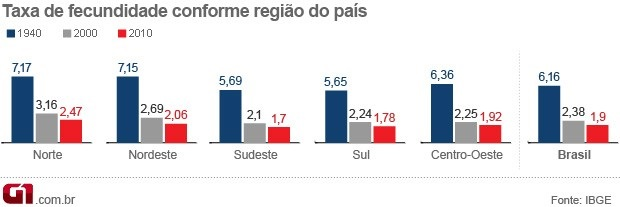
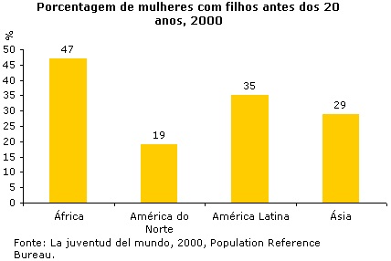
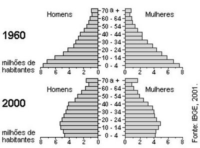

1) Observe a tabela e o gráfico abaixo:
| Evolução das taxas de fecundidade no Brasil |
|---|
| Época | Número de filhos por mulher
(em média) |
|---|
| Século XIX | 7,00 |
|---|
| 1960 | 6,20 |
|---|
| 1980 | 4,01 |
|---|
| 1991 | 2,90 |
|---|
| 1996 | 2,32 |
|---|
| 2000 | 2,38 |
|---|
| 2010 | 1,90 |
|---|
Fonte: IBGE

Explique:
a) Como é calculada a média de filhos por mulher.
b) Quais foram os fatores que levaram à diminuição da taxa de fecundidade.
c) Qual região brasileira apresenta maior taxa de fecundidade em 2010? E qual região tem a menor taxa? Explique.
2) Observe o gráfico abaixo:

Explique:
a) O que é e como é calculada a porcentagem?
b) Explique porque na África, na América Latina e Ásia a porcentagem de mulheres com filhos antes dos 20 anos é maior que na América do Norte?
3) Observe as pirâmides etárias do Brasil em 1960 e em 2000:

Explique:
a) Quais foram as principais mudanças nas características etárias (idade) no Brasil para homens e mulheres de 1960 a 2000.
b) O que provocou a redução da taxa de mortalidade e a taxa de natalidade?
c) O que mudou no país com esta alteração na estrutura etária da população brasileira?